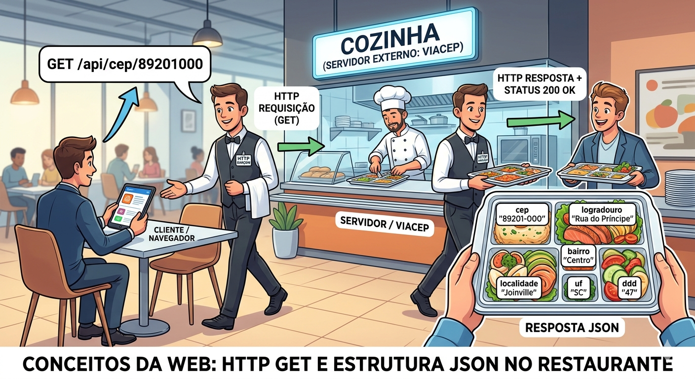
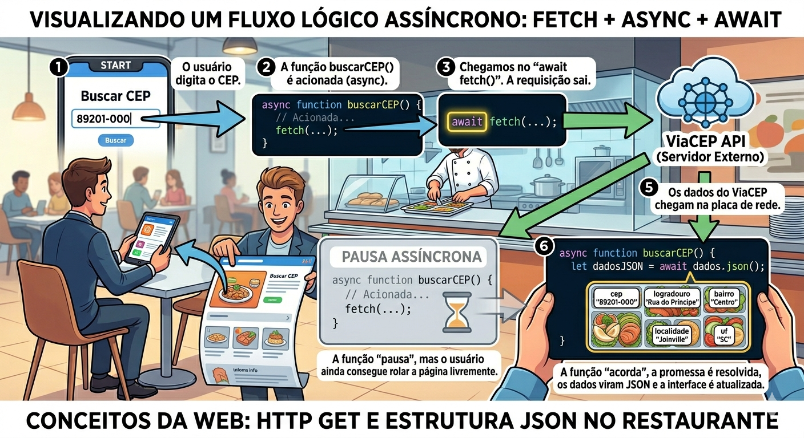
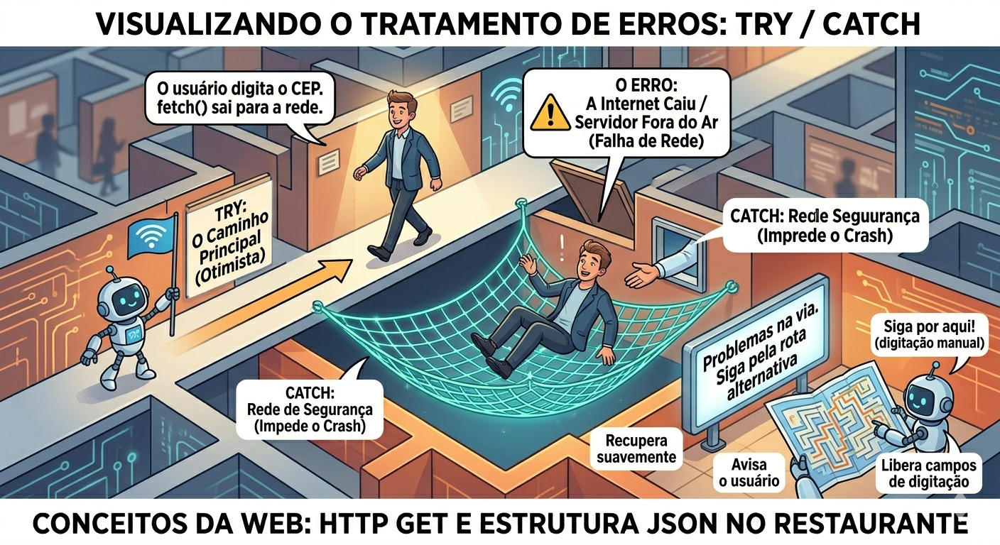

Exposição sobre verbos HTTP, Fetch API, cabeçalhos (headers) e manipulação de respostas JSON. Na prática, vamos consumir a API externa do ViaCEP para preencher automaticamente os campos de endereço em um formulário. Integração com o formulário de cadastro do projeto e implementação de tratamento de erros robusto, lidando com situações como CEP inválido e queda de conexão (rede offline).
A base da comunicação na internet
Vamos destrinchar esses conceitos essenciais do desenvolvimento web de forma didática, usando analogias do mundo real para facilitar o entendimento.
Imagine que a internet é uma enorme rede de rodovias conectando milhares de cidades (computadores). O HTTP (Hypertext Transfer Protocol) é o conjunto de leis de trânsito e o serviço de correios oficial dessa rede.
Ele define as regras exatas de como as mensagens devem ser formatadas, enviadas e recebidas para que todos os computadores se entendam.
Em qualquer comunicação web, temos dois atores principais:
É o seu navegador (Chrome, Edge, Safari) ou aplicativo fazendo um pedido.
É o computador potente conectado à internet que guarda a informação ou executa o serviço que você precisa.
Para que a conversa seja clara, o HTTP utiliza "verbos" (ou métodos) que indicam a intenção exata daquela mensagem. Os mais comuns são:
| Verbo HTTP | Ação no Mundo Real | Exemplo Prático |
|---|---|---|
| GET | Pedir uma informação (Ler). | Consultar um endereço a partir de um CEP. |
| POST | Enviar um pacote novo (Criar/Salvar). | Enviar os dados de um formulário de cadastro. |
| PUT | Pedir para alterar algo (Atualizar). | Mudar a sua foto de perfil no sistema. |
| DELETE | Pedir para jogar algo fora (Apagar). | Excluir uma postagem antiga. |
Essa padronização garante que o seu celular no Brasil e um servidor no Japão consigam "conversar" perfeitamente e sem mal-entendidos.
Se o HTTP é o caminhão dos correios, o JSON (JavaScript Object Notation) é o documento padronizado que vai dentro da caixa.
Sistemas diferentes costumam falar "línguas de programação" diferentes. O seu front-end pode ser escrito em JavaScript, enquanto o back-end (como a API do ViaCEP) pode ter sido construído em Python, Go ou PHP.
O JSON atua como um tradutor universal, transformando dados complexos das linguagens de programação em puro texto.
A estrutura do JSON é extremamente simples, organizada sempre em pares de chave e valor.
Exemplo prático de um JSON de endereço:
{
"cep": "01001-000",
"logradouro": "Praça da Sé",
"bairro": "Sé",
"uf": "SP"
}endereco.bairro ou endereco.uf.Na prática, quando um usuário digita um CEP, o seu Front-end utiliza as regras de transporte do Protocolo HTTP (usando o verbo GET) para viajar até o Back-end.
O servidor localiza o endereço, empacota essas informações na estrutura leve e universal do JSON, e as envia de volta pelo mesmo caminho.
Ao chegar, seu sistema lê o JSON e exibe automaticamente a rua e o bairro na tela.
Aqui você pode ver:

// Exemplo de uma string JSON crua recebida pela rede
const respostaRedeJSON = '{"cep": "01001-000", "logradouro": "Praça da Sé", "uf": "SP"}';
// 1. Convertendo (parsing) o JSON textual para um Objeto JavaScript real
const enderecoFormatado = JSON.parse(respostaRedeJSON);
// 2. Agora podemos acessar os dados com a notação de ponto
console.log(`O cliente mora no estado de: ${enderecoFormatado.uf}`);
// Saída no console: O cliente mora no estado de: SP
// 3. Processo inverso: Transformando um Objeto em JSON para enviar
const novoUsuario = { nome: "Maria", cargo: "Desenvolvedora" };
const usuarioParaEnvio = JSON.stringify(novoUsuario);
console.log(usuarioParaEnvio);
// Saída em texto puro: {"nome":"Maria","cargo":"Desenvolvedora"}Vamos traduzir esse código para algo visual e fácil de compreender, acompanhando o caminho dos dados passo a passo na prática.
Quando programamos para a web, nossa rotina envolve basicamente duas ações com os dados: desempacotar o que chega da internet e empacotar o que precisamos enviar. O código apresentado mostra exatamente essas duas ferramentas em ação.
A primeira variável, respostaRedeJSON, simula o exato momento em que uma informação chega do servidor (pelo protocolo HTTP).
Para o seu navegador, isso é inicialmente apenas um bloco de texto puro (chamado de string na programação).
O computador enxerga os caracteres, mas não entende o seu significado; para ele, ainda não existe um "endereço" ali, apenas uma frase muito específica.
Para podermos trabalhar com esses dados, precisamos traduzi-los. A função JSON.parse() atua como um abridor de caixas inteligente.
Ela lê o texto puro e identifica as chaves {}, os dois pontos e as aspas.
enderecoFormatado).A grande vantagem: Uma vez convertido para Objeto, podemos acessar qualquer pedaço da informação de forma cirúrgica.
Usando a "notação de ponto" (enderecoFormatado.uf), pescamos direto a sigla do estado, sem precisarmos "ler" a frase inteira para procurar onde está o "SP".
A segunda metade do código mostra o caminho de volta. Imagine que você acabou de criar um novoUsuario no seu sistema.
Dentro do JavaScript, ele já é um Objeto estruturado e fácil de manipular.
O problema é que a "rodovia" da internet (o HTTP) não transporta Objetos JavaScript; ela só transporta texto.
Aqui entra o JSON.stringify(). O termo stringify significa, literalmente, "transformar em string (texto)".
Essa função pega o seu objeto, "achata" todas as propriedades em uma única linha de texto puro ({"nome":"Maria","cargo":"Desenvolvedora"}) e o deixa pronto, leve e no formato universal para viajar de volta para o servidor.
Use JSON.parse() para transformar o texto em um Objeto inteligente e conseguir trabalhar com ele na tela do usuário.
Use JSON.stringify() para pegar o seu Objeto, transformá-lo em texto puro e despachá-lo pela rede.
Hoje em dia, é comum pedirmos para as IAs Generativas criarem "dados falsos (mocks)" no formato JSON para testarmos nossas interfaces antes do back-end estar pronto.
Se você domina a leitura de JSON, pode pedir: "Crie um JSON com 5 usuários mockados com id, nome e email", e usar isso para criar suas telas de forma independente!
A modernidade das requisições web
Para entender a Fetch API de forma clara, vamos manter a nossa analogia do restaurante, mas agora vamos transformá-lo em um serviço de delivery de aplicativo moderno.
No desenvolvimento web, pedir dados pela internet envolve um fator incontrolável: o tempo. O servidor pode estar no bairro vizinho ou lá no Japão; a internet do usuário pode estar super rápida ou caindo.
A Fetch API é a ferramenta que lida com essa incerteza de forma brilhante.
Antigamente, o JavaScript usava uma ferramenta chamada XMLHttpRequest para buscar dados. Era como tentar pedir uma pizza ligando de um telefone fixo analógico: você precisava discar vários números, passar por telefonistas, lidar com chiados e seguir um roteiro longo e cansativo. O código era complexo e difícil de ler.
A Fetch API chegou como o aplicativo de delivery moderno (nativa em todos os navegadores atuais). Com uma única linha de comando limpa, você consegue fazer o pedido.
Imagine o pior cenário possível de um pedido de comida: você liga para o restaurante, faz o pedido e fica com o telefone na orelha, congelado, sem poder piscar ou andar pela casa até o motoboy bater na sua porta.
Se o JavaScript funcionasse assim (de forma "síncrona"), toda vez que seu sistema pedisse um dado na internet, a aba do navegador do usuário ficaria totalmente travada até a resposta chegar. Ninguém conseguiria clicar em nada ou rolar a página.
Para evitar isso, a Fetch API funciona de forma Assíncrona, baseada em Promises (Promessas):
fetch(), você faz o pedido e o navegador te devolve uma "Promessa" de que a resposta vai chegar em algum momento.Se o navegador continua trabalhando enquanto o dado não chega, como nós organizamos o código para processar a resposta na hora certa?
É aí que entram os dois "poderes mágicos" da Fetch API: o async e o await.
| Comando | O que faz no código | Analogia no Mundo Real |
|---|---|---|
| async | É um rótulo que colocamos na função inteira. Ele avisa o JavaScript: "Atenção, dentro deste bloco de código existem coisas que dependem da internet e vão demorar". | É você avisando seus amigos na sala: "Gente, eu pedi uma pizza, fiquem cientes de que a campainha vai tocar em breve". |
| await | Colocamos essa palavra exatamente na linha do fetch(). Ela manda o JavaScript pausar apenas aquela tarefa específica até o dado chegar, enquanto o resto do site segue livre. |
É o momento em que a campainha toca. Você pausa a conversa que estava tendo com seus amigos, vai até a porta pegar a pizza, e só depois retoma o que estava fazendo com a comida em mãos. |
Antes do async e await, lidar com dados assíncronos no JavaScript gerava um código confuso, cheio de ramificações que os programadores chamavam de "Callback Hell" (O Inferno das Chamadas).
Hoje, ao ler um código com Fetch API, ele soa como linguagem humana: "Espere (await) buscar (fetch) os dados do servidor. Quando chegar, espere (await) converter para texto. Depois, mostre na tela."
Isso não apenas evita bugs bizarros no sistema, mas torna a comunicação entre a equipe de tecnologia incrivelmente mais fácil.
Qualquer desenvolvedor júnior ou sênior consegue bater o olho, entender o fluxo e aprovar o código sem dor de cabeça.
buscarCEP() é acionada (ela é async).
// A palavra 'async' indica que esta função lidará com operações assíncronas
async function consultarEndereco(cepInput) {
console.log("Buscando dados no servidor...");
// A string de URL do endpoint do ViaCEP
const url = `https://viacep.com.br/ws/${cepInput}/json/`;
// 1. O 'await' faz o código esperar a resposta da internet (requisição GET)
const resposta = await fetch(url);
// 2. Extraímos e convertemos o corpo da resposta de texto para JSON
const dadosConvertidos = await resposta.json();
// 3. Utilizamos os dados que agora estão prontos no nosso escopo
console.log(`Endereço encontrado: ${dadosConvertidos.logradouro}, Bairro: ${dadosConvertidos.bairro}`);
}
// Invocando a função (simulando que o usuário digitou um CEP de Joinville)
consultarEndereco('89201900');Vamos traduzir esse código linha por linha, continuando com a nossa lógica do "aplicativo de delivery" para que você entenda exatamente o que o computador está fazendo em cada etapa.
A grande sacada desse código é entender por que precisamos usar a palavra await (esperar) duas vezes.
async function consultarEndereco(cepInput) { ... }Ao colocar a palavra async antes da função, estamos avisando ao JavaScript:
"Olha, essa função vai se comunicar com o mundo exterior. Ela vai demorar um pouco, então se prepare para lidar com pausas de rede sem travar a tela do usuário".
const url = `https://viacep.com.br/ws/${cepInput}/json/`;Aqui estamos montando o endereço exato para onde nosso pedido será enviado.
Usamos as crases (Template Strings) para poder injetar dinamicamente o número do CEP que o usuário digitou exatamente no meio do link.
const resposta = await fetch(url);Esta é a linha mais importante. O fetch(url) faz a requisição GET na internet.
O await manda a função pausar aqui até que o servidor do ViaCEP responda.
A pegadinha: Quando a resposta chega, ela não é o dado pronto. Ela é como o pacote do motoboy ainda lacrado.
Esse objeto "bruto" traz apenas informações de envelope: o status da entrega (se deu erro 404 ou sucesso 200) e os cabeçalhos.
const dadosConvertidos = await resposta.json();Como recebemos um pacote lacrado na etapa anterior, precisamos abri-lo. O comando .json() faz duas coisas maravilhosas:
JSON.parse() que vimos antes, transformando o texto em um Objeto JavaScript inteligente.Porque ler o pacote e descompactar os dados também leva alguns milissegundos de processamento.
Precisamos "esperar" o pacote ser totalmente aberto antes de prosseguir.
console.log(`Endereço encontrado: ${dadosConvertidos.logradouro}, Bairro: ${dadosConvertidos.bairro}`);Agora que dadosConvertidos é um objeto perfeitamente estruturado na memória, você pode usar a notação de ponto (.logradouro, .bairro) para pescar exatamente a informação que precisa e mostrá-la na tela do usuário (ou no console, neste caso).
Sempre que você usar a Fetch API para ler dados de uma API externa (como um JSON), você terá duas fases obrigatórias de espera:
await fetch).await resposta.json()).Um erro clássico de desenvolvedores júniores é esquecer de colocar o await na frente do resposta.json().
Como o processo de conversão também é uma Promessa assíncrona, se você não esperar, o JavaScript retornará <Promise Pending> na sua variável em vez dos dados reais, quebrando toda a exibição da tela.
Envergando sem quebrar
Para entender o tratamento de erros e a resiliência no código, vamos manter a nossa analogia do aplicativo de delivery.
Até agora, assumimos que o garçom ou o motoboy sempre fará a entrega perfeita. Mas o mundo real não é assim.
No desenvolvimento de software profissional, existe uma regra fundamental: nunca confie na rede.
A pergunta que um programador sênior faz não é "E se a internet cair?", mas sim "O que nosso sistema fará QUANDO a internet cair?".
Pense nas inúmeras coisas que podem dar errado no meio do caminho:
Se o seu sistema não estiver preparado para isso, ele vai "quebrar".
Para o usuário, isso se traduz naquela tela branca assustadora, em um botão que fica carregando infinitamente, ou em códigos de erro técnicos que ninguém entende na tela.
Isso frustra o cliente e destrói a confiança no seu aplicativo.
Para criar um sistema resiliente (que enverga, mas não quebra), os programadores utilizam uma estrutura de segurança chamada try / catch (Tentar / Capturar).
Imagine que o try / catch é o protocolo de gerenciamento de crise do seu restaurante:
É a "zona de risco". Você coloca todo o código que depende da internet (como o fetch) dentro deste bloco.
É o gerente dizendo ao motoboy: "Tente (try) fazer esta entrega no endereço do cliente seguindo este trajeto. Se der tudo certo, ótimo, missão cumprida".
Este bloco fica adormecido. Ele só é ativado se qualquer coisa der errado dentro do bloco try. O fluxo do código é interrompido na hora do erro e "pula" direto para o catch.
O pneu da moto furou (a rede falhou). O motoboy não desiste e vai chorar na calçada (o sistema não "quebra"). Imediatamente, ele aciona o gerente (catch).
Dentro do catch, você assume o controle da situação para fazer duas coisas cruciais:
Você registra exatamente qual foi a falha (ex: "Erro 500 - Servidor do ViaCEP fora do ar") para que a equipe técnica possa investigar e consertar sem o usuário ver.
Você age com empatia. Em vez de uma tela de erro, mostra uma mensagem amigável: "Poxa, parece que estamos sem conexão com os correios agora. Você se importaria de digitar seu endereço manualmente?".
A resiliência não é apenas sobre tecnologia, é sobre comunicação e empatia.
O usuário digita o CEP, a internet oscila, a tela congela e o sistema morre. O usuário acha que o seu site é ruim e vai embora.
O usuário digita o CEP, a internet oscila. O sistema tenta (try), percebe a falha, captura o erro (catch), avisa o usuário educadamente e libera os campos de texto da tela para que ele não fique travado e possa continuar o cadastro digitando a rua e o bairro com as próprias mãos.
O negócio não para.
Esta imagem ilustra claramente como a resiliência e a UX andam juntas para criar sistemas profissionais.

async function buscarCepSeguro(cep) {
// 1. Iniciamos a tentativa cautelosa
try {
const resposta = await fetch(`https://viacep.com.br/ws/${cep}/json/`);
// 2. Verificamos se o servidor respondeu com sucesso (200 a 299)
if (!resposta.ok) {
// Lança manualmente um erro para acionar o 'catch'
throw new Error(`Servidor retornou erro: ${resposta.status}`);
}
const dados = await resposta.json();
// 3. Regra do ViaCEP: retorna 200 OK mas com "erro: true" se CEP não existir
if (dados.erro) {
throw new Error("CEP inexistente na base de dados.");
}
console.log("Sucesso! Rua:", dados.logradouro);
} catch (erro) {
// 4. Captura erro de rede, sintaxe ou os que nós 'arremessamos'
console.error("Falha na operação: ", erro.message);
alert("Não foi possível buscar automaticamente. Por favor, digite os dados.");
// Ação de contingência: Habilitar inputs bloqueados, etc.
}
}Vamos traduzir esse código passo a passo. Se no conceito anterior vimos que o try / catch é o nosso labirinto com alçapões e redes de segurança, este código mostra como nós mesmos podemos abrir um alçapão de propósito quando percebemos que fomos enganados.
Aqui está a anatomia de um código profissional e seguro, operando no mundo real onde as APIs têm suas próprias manias e pegadinhas.
Tudo começa de forma otimista. Colocamos nosso pedido fetch dentro do bloco try.
É o nosso motoboy saindo para a entrega.
if (!resposta.ok)
Aqui temos uma particularidade importantíssima do JavaScript: a função fetch é extremamente literal. Ela só considera um erro (e pula pro catch sozinha) se a internet cair ou o cabo for cortado.
Se o servidor do ViaCEP estiver pegando fogo (Erro 500) ou o endereço da API tiver mudado (Erro 404), o fetch volta feliz e diz: "Chefe, a internet tá ótima! Fui lá e eles mandaram avisar que a página não existe!".
Para o nosso sistema, isso é um problema grave. Por isso, checamos a propriedade resposta.ok (que só é verdadeira para respostas de sucesso, como 200).
Se for falso (!resposta.ok), nós usamos o comando throw new Error().
É você puxando o alarme de incêndio com as próprias mãos. Você "arremessa" (throw) o erro, interrompendo o código na hora e forçando a queda direta para a rede de segurança do catch.
if (dados.erro)
Às vezes, a API tem suas próprias regras de negócio. Se você digitar um CEP no formato perfeito (ex: 99999-999), mas que não existe no mapa, o servidor do ViaCEP não devolve um Erro 404. Ele devolve um Status 200 OK com uma caixa contendo o seguinte JSON: {"erro": true}.
Novamente, fomos enganados pelo carteiro. Ele trouxe a caixa intacta, mas dentro só tem um bilhete dizendo "não achei".
Como não queremos mostrar o bairro "undefined" para o usuário, nós interceptamos essa pegadinha e usamos o throw new Error("CEP inexistente") para, mais uma vez, puxar o alarme manualmente e fugir para o catch.
Se a internet cair, se a URL estiver errada, se o fetch chorar, ou se nós mesmos puxarmos o alarme com o throw, o fluxo do código despenca imediatamente para cá.
Aqui, atuamos em duas frentes:
console.error(...): Falamos com o programador (registrando o motivo exato do erro nos bastidores).alert(...): Falamos com o usuário de forma amigável e ativamos o plano B (como liberar o formulário para ele digitar a rua manualmente).Um desenvolvedor iniciante acha que o catch serve apenas para quando a conexão falha. Um desenvolvedor experiente sabe que nós assumimos o controle da narrativa.
O comando throw é o nosso superpoder para dizer: "Não aceito essa resposta. Isso é um erro para o meu negócio, aborte a missão e vá para o plano de contingência!".
Quando estamos trabalhando em equipe, reportar falhas corretamente é crucial. No bloco catch, além de exibir um alerta ao usuário, em sistemas avançados usamos bibliotecas para enviar o erro.message para um painel de monitoramento da equipe de suporte (como o Sentry).
Assim, o time descobre falhas de API antes mesmo do cliente reclamar!
Dúvidas comuns e fechamento da aula
Pergunta: O que é o erro de "CORS" que aparece às vezes no console quando faço fetch?
CORS (Cross-Origin Resource Sharing) é uma trava de segurança do seu navegador. Ele impede que seu site (ex: meusite.com) puxe dados do servidor do vizinho (ex: api.com) a menos que o api.com envie um cabeçalho explícito autorizando o seu site.
O ViaCEP autoriza todo mundo publicamente, mas muitas APIs corporativas exigem configurações especiais no back-end para liberar o acesso.
Pergunta: Quando devo usar o Fetch e quando usar bibliotecas como o Axios?
O fetch é nativo do navegador, não exige instalações e é excelente para 90% dos casos.
O Axios é um pacote de terceiros que adiciona facilidades como converter JSON automaticamente (não precisa do await res.json()), interceptadores globais e proteção melhorada de segurança.
Use fetch em projetos padrão e Axios em projetos muito robustos, como grandes painéis em React/Vue.
Pergunta: Posso misturar async/await com os antigos .then()/.catch()?
O JavaScript permite, mas por questões de legibilidade (Clean Code), evite!
Misturar os dois paradigmas no mesmo escopo torna o fluxo assíncrono muito confuso de ler e debugar. Escolha um padrão para o seu arquivo (preferencialmente async/await) e mantenha-o do começo ao fim.
Pergunta: Por que o fetch retorna sucesso (ok) quando a página dá Erro 404 Not Found?
O fetch só considera uma falha de "Promise Rejected" (e pula pro catch) quando ocorre um problema na rede em si (cabo desconectado, erro de resolução de DNS).
Se ele enviou o sinal, bateu no servidor, e o servidor respondeu ativamente "Olha, erro 404, não achei essa rota", do ponto de vista do protocolo de rede, houve comunicação bem-sucedida! Por isso devemos tratar o !resposta.ok manualmente.
Pergunta: Se minha requisição exigir uma chave de API secreta (API Key), como envio ela no Fetch?
Chaves não devem ir na URL expostas. Nós passamos um segundo parâmetro opcional no fetch, contendo os headers da requisição:
fetch('https://api.empresa.com/dados', {
method: 'GET',
headers: { 'Authorization': 'Bearer MINHA_CHAVE_AQUI' }
});JSON.parse().Situação de Aprendizagem (SA): Todo este esforço do nosso encontro tem um destino certo na SA. No Cronograma (Bloco 05 e 06), vocês desenvolverão um robusto Backend em PHP com banco de dados estruturado para a persistência de clientes e sistema de autenticação (CRUD).
O que construímos hoje garante que a "porta de entrada" desse banco de dados (o nosso Frontend HTML) filtre e automatize dados altamente complexos (como logradouros, IDs estaduais) de maneira precisa e confiável, atendendo aos rigorosos "requisitos de usabilidade, integridade e segurança da informação" (Capacidade Técnica CT01) exigidos pela banca avaliadora.
A ponte que une a experiência maravilhosa no cliente (JS) com a segurança dos dados no servidor (PHP) foi erguida hoje com sucesso!
Com o consumo de dados externos e manipulação do DOM totalmente estabelecidos, nossa próxima etapa (Aula 24) marca o fechamento deste grande bloco de front-end.
Vamos revisar as integrações e afinar os detalhes da interatividade Client-Side, construindo os últimos eventos antes de migrarmos de vez para o servidor.
Reflita sobre a seguinte questão:
Agora que nosso front-end é independente, inteligente e interativo, qual você acha que deve ser o critério decisivo para escolher quais lógicas permanecem no navegador (JavaScript) e quais obrigatoriamente devem ficar escondidas no nosso futuro back-end (PHP)?
Vejo vocês na próxima aula!